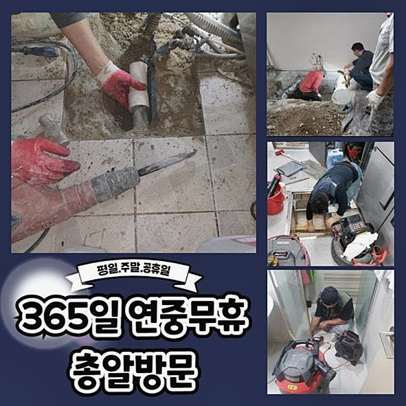
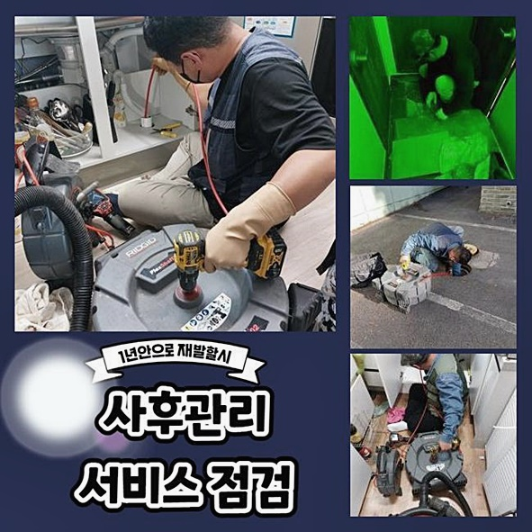
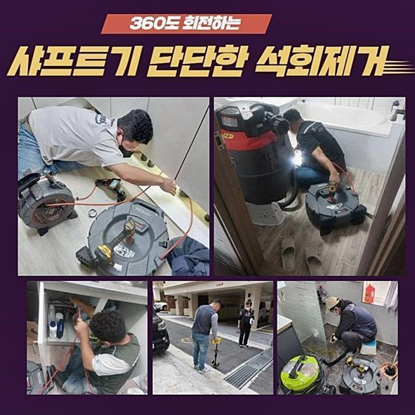
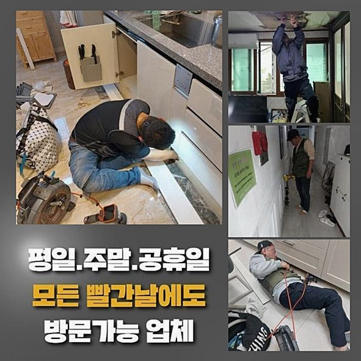
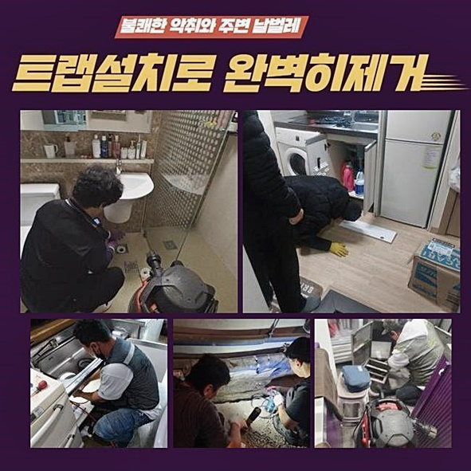
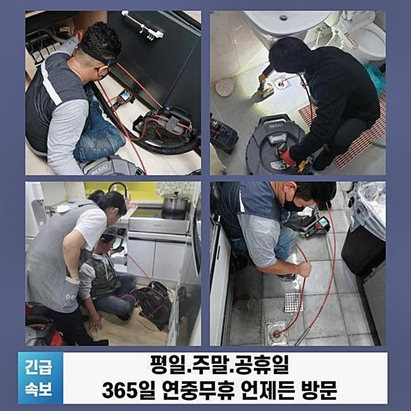
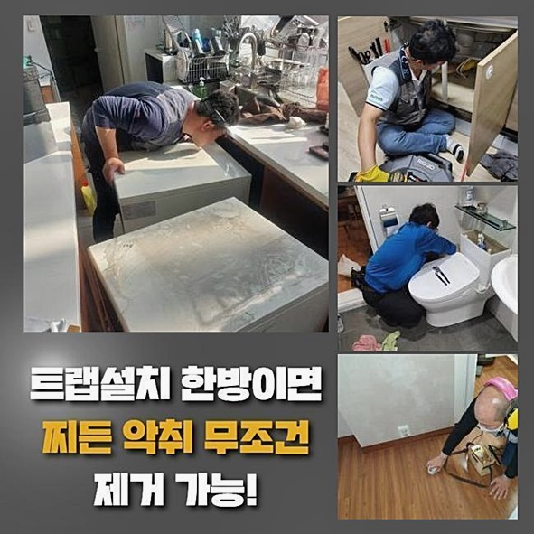

🏠 일산 식사동욕실역류 풍산동 횡주관청소 통수전문
용인시 처인구 배관막힘 전문 시공 후기

📋 작업 개요
- 위치: 용인시 처인구, 수원시 영통구, 화성시 동탄
- 서비스 유형: 배관막힘, 고압세척, 내시경점검
- 작업 일시:
- 업체명: 하수구수사대 (010-5615-2118)
🔍 문제 상황
일산 식사동욕실역류 풍산동 횡주관청소 통수전문
오늘 저희는 배수 장애가 있을때 수리업체 선택하는 방법을 알려드릴게요
전문팀 선정 시에 유념해야할것은 전문가의 하수도막힘 화장실 오수관막힘의 전문지식들과 노하우입니다
배수구에 관한문제는 확실하고 신속한 처리가 시급하기에 전문적인 능력과 노하우가 있는 기술자를 고르셔야해요
그 다음 사항은 비용과 수리기준을 확인해야합니다
확실한 수리와 가격은 중요하긴해도 더많은 서비스들이나 보증기한을 생각해서 전반적인 금액을 확인해보는 것이 바람직합니다
마지막단계로 기존 소비자의 리뷰들과 만족도를 확인하는 것이 도움이됩니다
먼저 이용한 고객의 의견에 근거하여 전문기사의 정비 품질과 기술력을 검증할 수 있어 이로인해 좀 더 슬기로운 결정들을 할 수 있습니다
그래서 배수관막힘 상황이 나타났다면 최상의 하수관로막힘 화장실 오수관막힘 숙련된 수리기사를 고르려면 이런 항목들을 고려하여 선정하는 것이 바람직합니다
하수관로의 문제점을 살펴보고 관속을 분석해나가는 작업중에 적합한 조치를 통하여 문제를 처리하며 의뢰자의 고민해결을 위해 노력을 기울이겠습니다
우리의 방식은 체계적이며 많은 경력과 전문적인 기술로 의뢰자의 어려움을 없애드릴 것을 보장해드리겠습니다
오물들이 상당히 축적되어 있는 부분엔 강한수압으로 청소를 했고 흡입기를 사용하여 주요 방해물들을 처리했습니다
그 후 특수장비를 이용하여 퇴적물과 조그만 찌꺼기를 고압으로 제거했습니다
이와같이 청소함으로써 배수장애를 처리했고 손상방지를 위해 규칙적인 클리닝이 필요함을 알려드려요

🔎 원인 분석
💡 전문가 진단: 정밀 진단 장비를 사용하여 슬러지의 고착 여부를 판명하고 타격/세척 작업을 실시했습니다.
내버려두면 더 커다란 문제상황이 생길수 있으므로 지속적인 관리가 중요합니다
그래서 저희들은 근무시간을 정해놓지 않는 상태로 언제나 내내 수리가능하게 준비를 갖추고 있습니다
이번에 저희업체가 해결한 현장에서는 밤중에 생긴 막힌 하수관으로 인해 화장실로 들어가니 심한냄새 때문에 상태가 긴급함을 알게되었습니다
진행할때는 알맞은 힘으로 분쇄 절차를 실시해서 오물들을 정밀하게 갈아내고 석션도구를 사용해 신중히 흡수하여야합니다
이런식으로 반복해서 불순물을 없애는 과정들을 완료하고 나서는 내시경기기를 집어넣어 배수관 안쪽을 정밀히 확인하게됩니다
깔끔해진 배수구 내부의 진단사항들을 이용자에게 알리고
마지막으로 양변기에 물을 채워 배수성능 테스트를 하여 물빠짐이 확실히 되는지 살펴봅니다
면밀하게 과정을 진행하여 배수구 고장을 수리했어요
주로 욕실에서 배관막힘 현상이 발생하게 되면 일정에 불편함을 발생시킬 수 있죠
이럴때는 이유들을 분석하고 긴급히 해결하는 것이 중요합니다 그러나 이유를 확인하고 바로 잡는 것은 만만치 않습니다
그래서 배수관막힘 수리업체의 도움이 필요한것입니다
우리는 전문적인 기구와 장비들을 적용하여 이물질들을 제거해드리고 하수관 세척과정을 수행했습니다
석션기기 청소장비 파쇄기등을 활용하여 불순물을 처리하고 배수관안쪽을 청소했습니다
먼저 수도꼭지를 틀어서 배수장애 현상들을 점검했고 면밀히 문제들을 알아봤죠

🔧 작업 과정
타 업체에서 찾아왔었지만 풀리지 않아 저희 업체에 상담을 요청하셨다는데
우리업체는 수리에 해결하지 못하면 비용을 부과하지 않는 제도를 시행하는 중이므로 마음놓으셔도 괜찮습니다
효과적으로 마무리하고 나면 원하는 시기에 무료서비스를 이용하실수 있게 도와드리고 있습니다
배관막힘 현상은 욕실 사용시에 불편을 주게되고 스케줄에 상당히 지장을 유발하게 됩니다
때문에 긴급한 대책을 강구해야 하며 하수도막힘 화장실 오수관막힘 전문인의 도움이 필요로 합니다
우리전문가는 소비자들의 고충을 줄여드리고 편안한 일상을 관리하도록 많은정성을 기울이고 있어요
밤낮없이 지원이 필요할경우 저희전문팀에게 연락을 주세요
하루종일 문의받고 있으며 주말에도 출장 또한 지원하고 있습니다
위생적인 조건을 제공하고자 열심히 일하는 우리전문가와 같이 편안한 생활들을 만끽하세요
소변기 밑부분의 부속품을 제거하였더니 미세한 오염은 존재했지만 주요 이유는 그정도로 간단하지 않았죠
그래서 배수관 속안을 검토해야 했으므로 특수 장비를 사용해 배수구 안쪽에서 조사했어요
내부쪽에 적지않은 먼지들과 이물질들이 쌓여있으며 그것들이 배출을 방해한 주요 원인이었죠
그런다음 적합한 살균제나 클리너를 이용하여 배수관을 청결하게 세척해주었습니다
이러한 과정을 통해 배수작용이 제대로 가능하게 처리했습니다
최종적으로는 의뢰인에게 하수관에 조금의 물때들이나 불순물이 쌓여가지 않게 유의사항을 안내했어요
이 현상을 바로잡고자 내시경장비를 사용하여 배수관 속안을 점검한결과 손이 안닿는 지점에 석회성분이 견고하게 붙어있는 모습을 확인했어요
석회덩어리는 많은양의 불순물이 축적되고 결합해 하수관을 막아버리는 물질들로 방치할시 물길을 방해하거나 배수관에 손상들을 일으키게 됩니다
그러니까 석회물질들을 없애려고 했고 이 작업을 위해 샤프트 장치를 이용했습니다
이 기구를 이용하여 석회성분을 작게 깨고 효율적으로 없애서 하수도의 원래 기능을
이방법으로 석회물질들을 제거해서 하수관역류 현장의 기본 원인들을 처리할수 있었어요
특정상황이 벌어진 요인를 못 찾으면 문제해결을 할 수가 없는게 당연하여 즉시 문제를 파악하기위해 노력하였습니다
변기를 떼어낸 후에 배수파이프에 내시경도구를 넣어보았더니 배수가 안되는 이유들을 찾게되었어요


✅ 작업 완료
며칠전에도 시도했던 녹지 않았던 찌꺼기들이 배관을 막아 원활한 배수가 불가했어요
이걸 제거하려고 시도했고 의뢰인께도 내시경장비로 상태를 보여주면서 말씀드렸습니다
상황의 원인들을 밝히려고 최대한 노력했으며 왜 이런문제가 일어났는지 이해했습니다
동일한 상황들을 방지하고 싶다면 지속적인 배수구 점검과 청소가 필요함을 설명해드렸습니다
기분좋은 하수배관막힘 화장실 배수로막힘 서비스제공을 위해 전력을 다해 노력할 것입니다
이런 혜택을 지원하는 전문업체를 고르는 방법이 최상의 선택입니다




⚠️ 하수구 배관 막힘 예방 및 관리 가이드
- ✅ 머리카락, 비닐, 물티슈 등 물에 분해되지 않는 이물질은 절대 흘려보내지 마세요.
- ✅ 기름기 많은 식기는 설거지 전 키친타올로 먼저 기름때를 닦아내세요.
- ✅ 주기적으로 배수구에 뜨거운 물을 가득 부어주어 유지방 고착을 방지하세요.
- ✅ 작업 후 1년 이내 재발 시 무상 A/S 보증 서비스를 제공합니다.
💡 핵심 정리
- 확실한 장비 작업(내시경 점검 및 샤프트 스케일링)으로 원인을 뿌리 뽑습니다.
- 작업 후 1년 이내에 동일한 부위 재발 시 100% 무상 A/S 서비스를 보장합니다.
- 서울 · 경기 · 인천 전 지역에 24시간 언제든 긴급 출동할 수 있도록 항시 대기 중입니다.
❓ 자주 묻는 질문 (FAQ)
🚨 용인시 처인구 배관막힘 문제로 고민이신가요?
정확한 원인 진단과 확실한 시공으로 재발 없는 해결을 약속드립니다.
24시간 긴급 출동 | 서울 · 경기 · 인천 전지역 | 1년 내 재발 시 무상 A/S